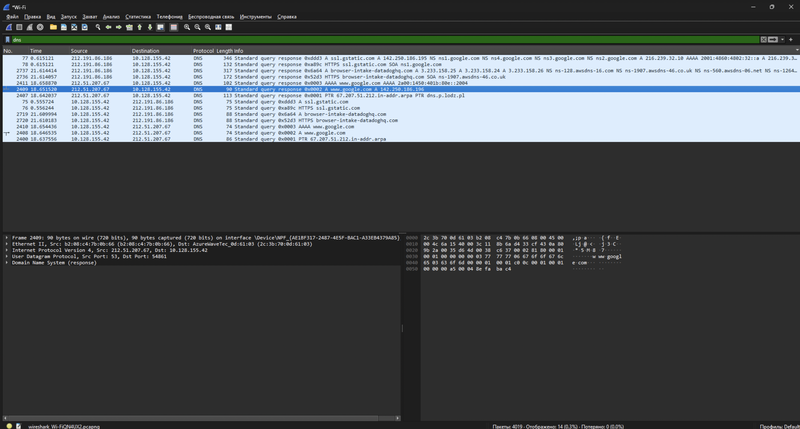

Networking Technologies Assignment 4
By: Valeriia Balatska (253850), Vladyslav Dubenchuk (253847)
Theoretical Part - Network and Transport Layers
TCP and UDP Protocols
TCP Protocol (Transmission Control Protocol)
The Transmission Control Protocol (TCP) is one of the main protocols of the Internet protocol suite. It originated in the initial network implementation in which it complemented the Internet Protocol (IP). Therefore, the entire suite is commonly referred to as TCP/IP. TCP provides reliable, ordered, and error-checked delivery of a stream of octets (bytes) between applications running on hosts communicating via an IP network.
Key Features of TCP:
- Reliability: Uses acknowledgments and retransmissions for error detection and correction.
- Order: Ensures packets are delivered in sequence using sequence numbers.
- Flow Control: Adjusts the rate of data flow to prevent overwhelming the receiver.
- Congestion Control: Adapts the sending rate based on network congestion.
- Connection-Oriented: Requires a connection to be established (via a handshake) before data transfer.
UDP Protocol (User Datagram Protocol)
UDP is a connectionless protocol that focuses on fast data transmission without ensuring reliability, order, or error correction. It is best suited for applications that require low latency and can tolerate some data loss.
Key Features of UDP:
- Unreliable: No acknowledgment or retransmission of lost packets.
- Connectionless: Does not establish a connection before sending data.
- Low Latency: Faster than TCP as it eliminates overhead like acknowledgments and handshakes.
- Broadcast and Multicast: Supports sending data to multiple devices simultaneously.
TCP Protocol Parameters
TCP parameters include sequence number, acknowledgment number, data offset, reserved, control bits (flags), window size, checksum, urgent pointer, options, and padding. These parameters help in establishing a reliable connection and ensuring data integrity during transmission.
- Sequence Number: Used to keep track of data packets and ensure correct ordering.
- Acknowledgment Number: Indicates the next expected byte from the sender.
- Window Size: Specifies the amount of data the sender can transmit before needing an acknowledgment.
- Flags: Includes control flags like
SYN, ACK, FIN, and others to manage connection states.
- Checksum: Ensures data integrity by verifying errors in the transmitted segment.
- Urgent Pointer: Signals urgent data that needs immediate attention.
UDP Protocol Parameters
UDP has fewer protocol parameters than TCP, including source port, destination port, length, and checksum. These parameters help in identifying the source and destination of the data and ensuring data integrity to some extent.
- Source Port: Identifies the sending application.
- Destination Port: Identifies the receiving application.
- Length: Specifies the length of the UDP header and data.
- Checksum: Used to verify the integrity of the packet.
TCP Connection
TCP establishes a connection between two devices through a process known as the three-way handshake. This process ensures both devices are ready to communicate and agree on initial sequence numbers.
Steps of Three-Way Handshake:
- SYN: The client sends a
SYN (synchronize) message to the server to initiate the connection.
- SYN-ACK: The server responds with a
SYN-ACK message, acknowledging the client's request and sending its own synchronization.
- ACK: The client sends an
ACK message, confirming the server's response.
Connection Establishment
TCP connections are established through the three-way handshake process. Both parties agree on parameters like initial sequence numbers and window size to facilitate communication.
Connection Release
To terminate a TCP connection, a four-step process is typically followed:
- FIN: One party sends a
FIN message to signal the intent to close the connection.
- ACK: The other party acknowledges the
FIN message.
- FIN: The second party sends its own
FIN message to signal it is ready to close the connection.
- ACK: The first party acknowledges the second
FIN message, completing the termination.
Ports
Ports are numerical identifiers used to differentiate between multiple applications or services running on a single device. They are categorized as:
- Well-Known Ports: (0–1023) Reserved for common services like HTTP (port 80) and FTP (port 21).
- Registered Ports: (1024–49151) Assigned to specific applications or services.
- Dynamic/Ephemeral Ports: (49152–65535) Used for temporary communication during sessions.
Practical Part
2.1 Identify ports used by a web browser
2.2 Copying a File Using FTP
2.3 Copying a File Using SCP and SFTP
2.4 Checking DNS Protocol and Port
wireshark

dns trigger
verification